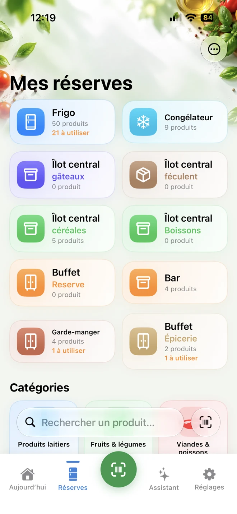
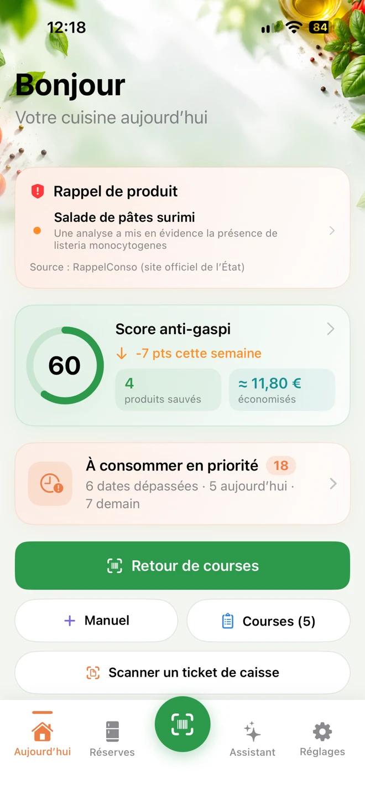
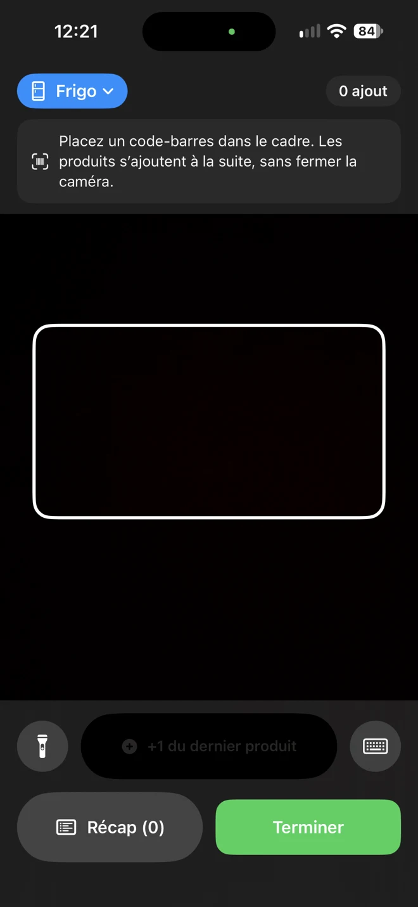
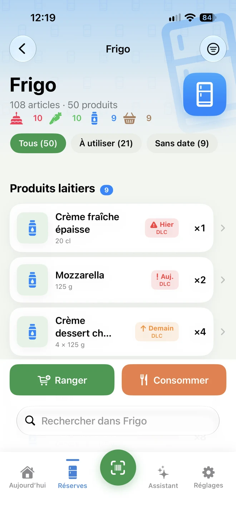
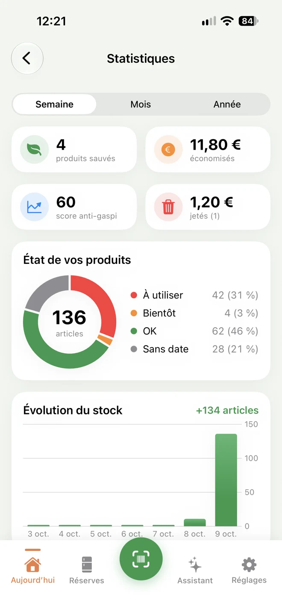
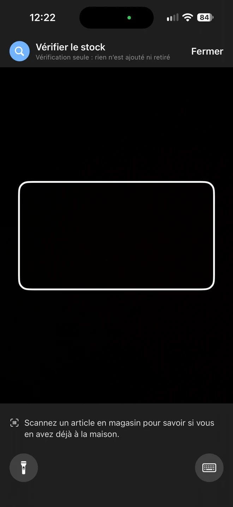
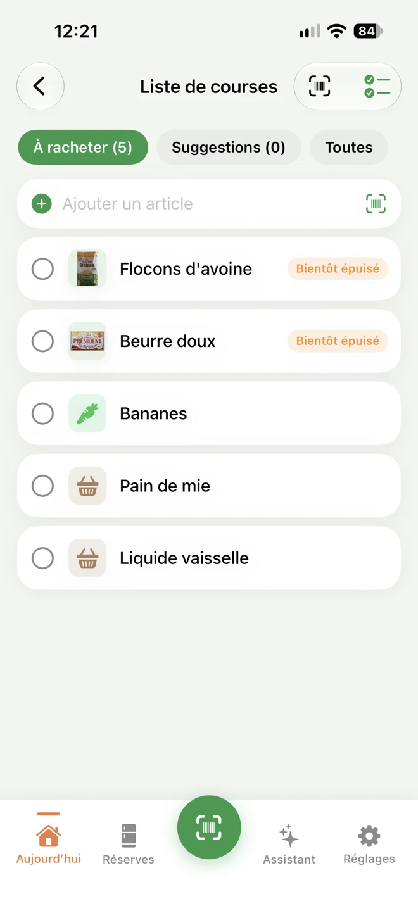
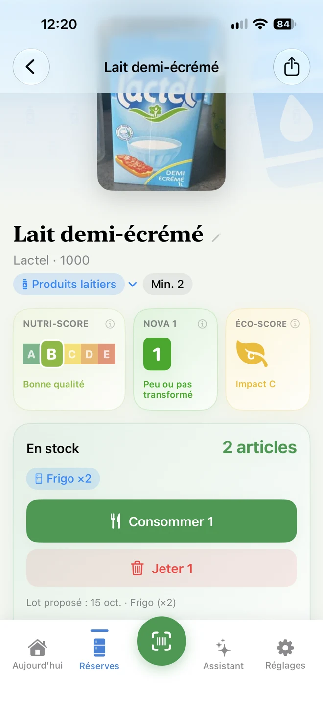
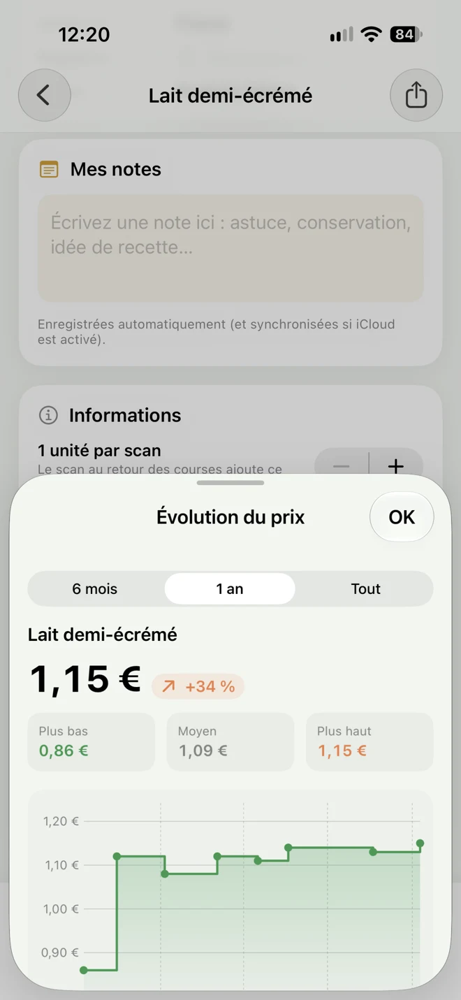

01
Ranger en un scan.
Scannez les codes-barres en continu. Nom, marque, photo et rayon sont trouvés avec Open Food Facts. Un paquet de quatre yaourts compte quatre unités.
Sachez ce que vous avez chez vous, et quoi manger d’abord. Scannez vos courses. Retrouvez vos réserves. Gardez une longueur d’avance sur les dates.
Food Tempo sera bientôt disponible sur l’App Store.
Aucun compte. Aucune publicité. Aucun suivi.


Frigo, congélateur, placards : chaque produit retrouve son emplacement et sa date. Food Tempo vous aide ensuite à manger dans le bon ordre.
Scannez les codes-barres en continu. Nom, marque, photo et rayon sont trouvés avec Open Food Facts. Un paquet de quatre yaourts compte quatre unités.
Retrouvez les produits à consommer en priorité, avec leur valeur en euros. Recevez un rappel trois jours avant la date et le jour même.
Scannez un produit en magasin pour vérifier votre stock, son emplacement et sa date. Votre liste se remplit sous le stock minimum.
Enchaînez les scans au retour des courses, puis retrouvez vos produits là où vous les avez rangés.

Captures de Food Tempo
Identifiez ce qui doit être consommé d’abord. Suivez vos produits sauvés et vos euros économisés avec le score anti-gaspi.


Captures de Food Tempo
Vos réserves prennent un rythme. Vous gardez le tempo.
Découvrir les courses ↗Avant d’ajouter un produit au panier, vérifiez s’il vous en reste, où il est rangé et jusqu’à quand.


Captures de Food Tempo
Créez vos emplacements et sous-emplacements, comme « Buffet › Épicerie ». Retrouvez un produit par emplacement, par rayon ou avec la recherche instantanée.


Captures de Food Tempo
Food Tempo compare les produits de votre stock aux rappels publiés sur RappelConso. La comparaison se fait sur votre iPhone : votre stock n’est jamais envoyé.
Calories, conservation, saisons, régimes ou état du stock : posez vos questions. Les valeurs nutritionnelles viennent de la table Ciqual de l’ANSES, intégrée à l’app. L’assistant fonctionne avec Apple Intelligence sur les iPhone compatibles.
Widgets pour les produits à consommer, les actions rapides et les courses. Siri et Raccourcis pour agir simplement. Un mode démonstration pour tout découvrir.
Aucun compte. Aucune publicité. Aucun suivi. Vos réserves restent sur votre iPhone.
Sans compteSans publicitéSans suiviLancez le scan continu des codes-barres, puis rangez les produits dans leur emplacement avec leur date. Les produits sans code-barres peuvent être ajoutés manuellement. Vous pouvez aussi lire un ticket de caisse pour retrouver les articles et les prix.
Consultez la liste « À consommer en priorité ». Food Tempo affiche les dates et la valeur en euros des produits. Les notifications vous préviennent trois jours avant la date et le jour même.
Non. La comparaison avec les rappels officiels de RappelConso se fait sur votre iPhone. Votre stock n’est jamais envoyé.
Non. Food Tempo fonctionne sans compte, sans publicité et sans suivi. Vos réserves restent sur votre iPhone.
Le mode démonstration permet d’explorer Food Tempo. Pour une question ou pour suivre le lancement, écrivez-nous depuis la section Contact.
Une question sur Food Tempo, une suggestion ou l’envie de suivre son lancement ? Écrivez-nous en quelques secondes.
Le bouton ouvre votre application mail avec le message rempli. Vous pourrez ensuite l’envoyer à dombaumont@free.fr.